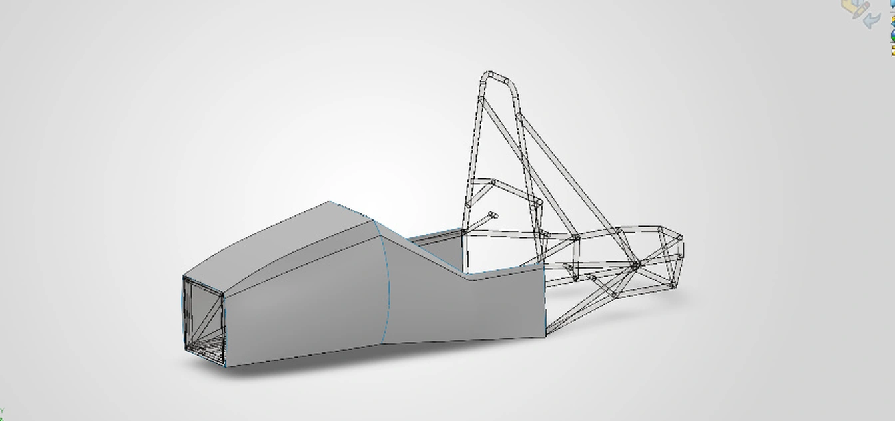
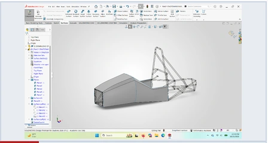
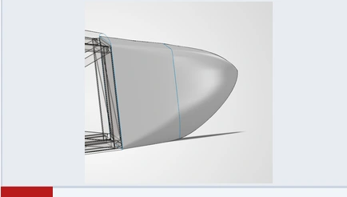
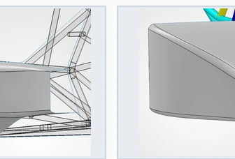
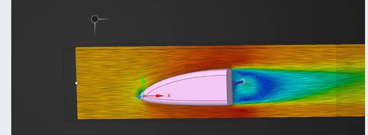

Aerodynamics subteam / 2026
Formula SAE
Bodywork.
A design portfolio tracing how the NJIT chassis fairing, nosecone, and sidepod took shape in SolidWorks, alongside reference flow studies in Ansys Discovery.

50
Sep 14 – Nov 3
SolidWorks + Ansys
Project index / 01–04
Explore the development

01 / CAD
Bodywork
From flat chassis panels to a continuous shell around the cockpit.
View case study ↗
02 / CAD
Nosecone
A rounded tip and a flush transition into the front bulkhead.
View case study ↗
03 / CAD
Sidepod
Radiator packaging and a swept fairing around the side-impact tubes.
View case study ↗
04 / CFD
CFD
Reference nosecone flow studies in Ansys Discovery.
View case study ↗